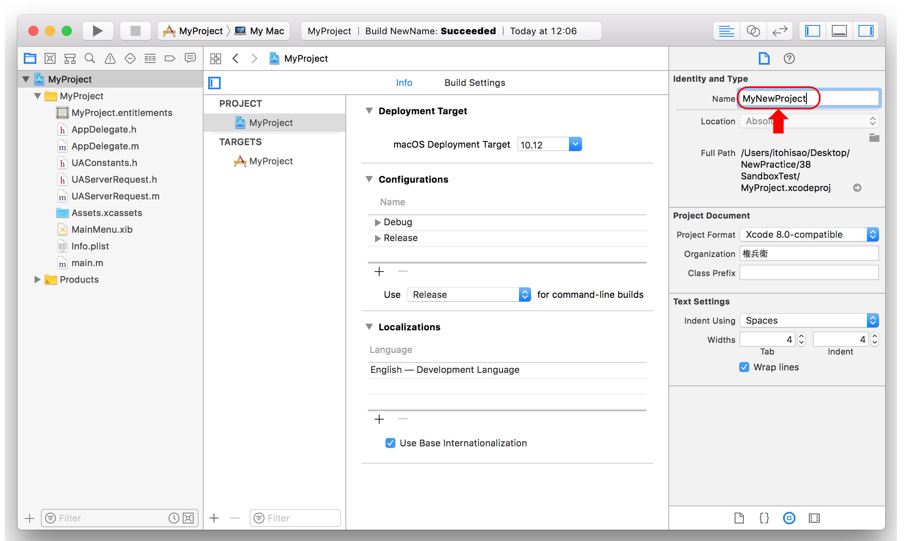
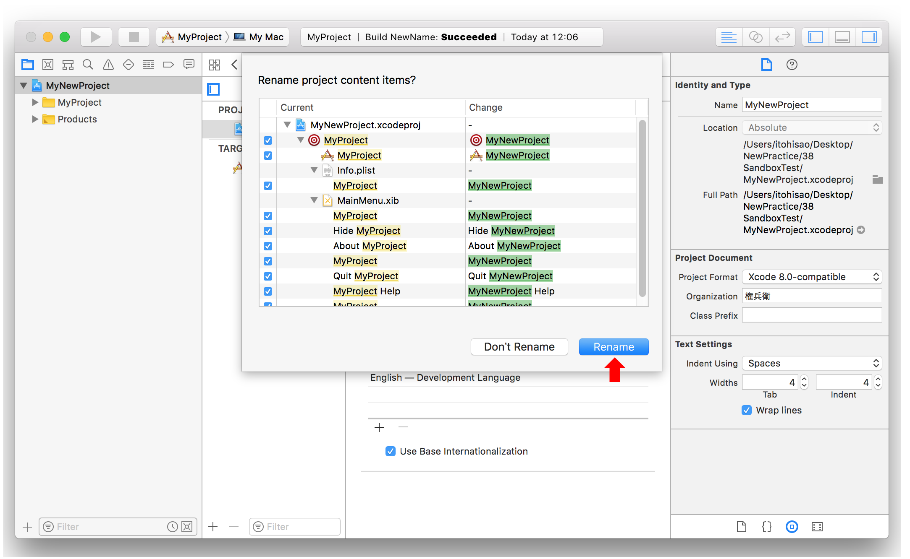
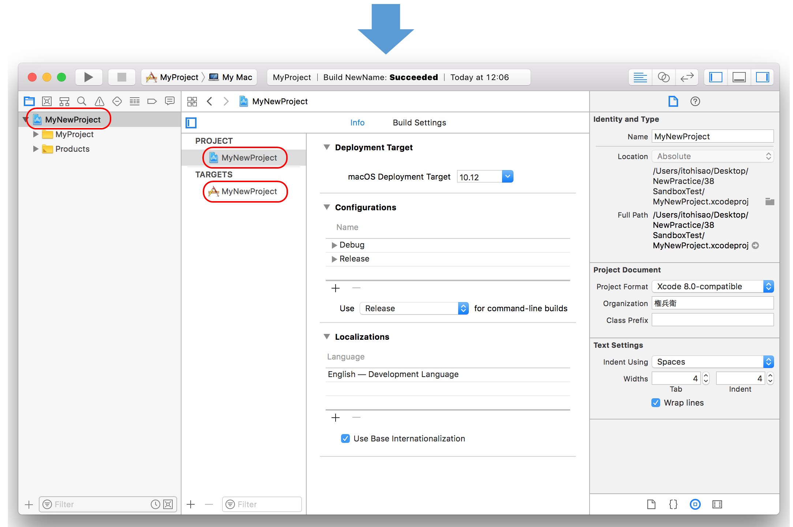
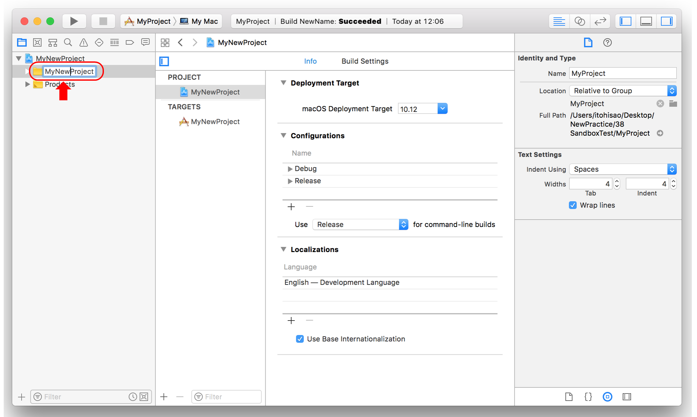

プロジェクト名を変更する（ Xcode 9.2 ）
プロジェクト名『MyProject』を『MyNewProject』に変更してみる
プロジェクトのNameプロパティを変更する
XCodeエディタのProject Navigatorから『MyProject』を選択し、プロジェクトの設定画面を表示する。
（Menu → View → Utilities →）File inspectorを表示する。
Identuty and typeのNameを新しい名前『MyNewProject』に変更し、Returnキーを押す。

プロジェクト内の要素の名前を一括して変更する
確認画面が出るので、Renameボタンをクリックする。


これだけでOK
ただし、ソースファイルを格納するフォルダ名は古いプロジェクト名のままである。これを変更するためには次のことを行う。
フォルダ名を変更する
Project Navigatorに表示されているフォルダ名を直接『MyNewProject』に変更する。
